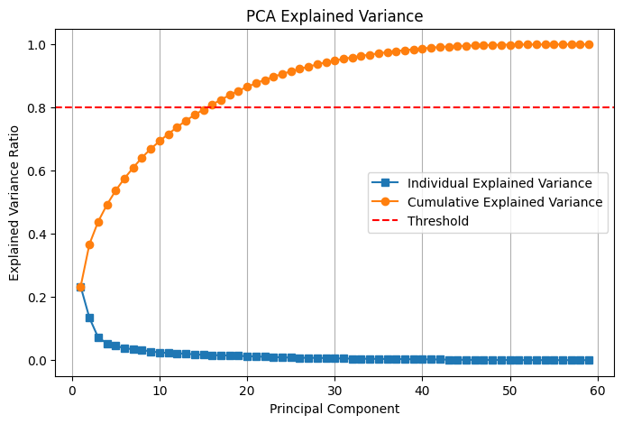
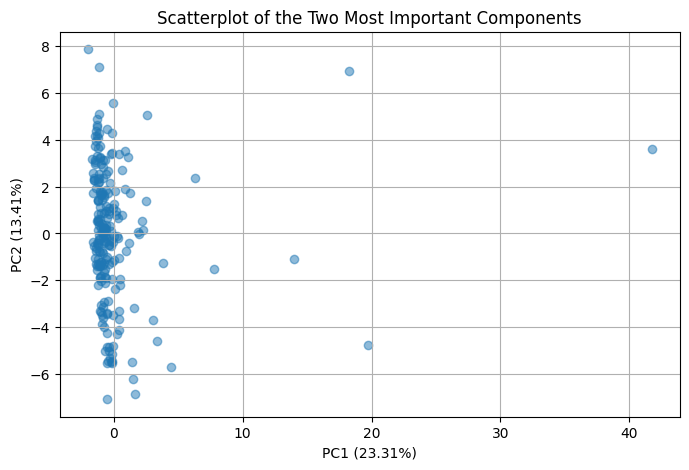

CSCI 5612 Machine Learning for Data Science:
Regional Climate Factor Analysis:
Principal Component Analysis
Overview
Principal Component Analysis is a method of dimensionality reduction, which can be applied to reduce the number of features in a dataset based on the most "important" descriptors. Within the algorithm itself, the first step is to normalize the data, as PCA would likely malfunction without this accomodation. Next, the covariance matrix of the dataset is constructed. This matrix describes how every pair of variables vary with each other using the covariance formula. From here, two importants variables are calculated together: the eigenvalues and eigenvectors. These values can be found using the cofactor method, which is fairly computationally expensive. Once the eigenpairs are acquired, they can be used to (respectively) describe two important insights into the dataset: the magnitudes and directions of the principal components.
The principal components of a dataset describe the most "influential" features, by which most other features can be described. The principal components, being vectors, can be sorted by their magnitudes to produce a list of the most important, or "principal", components. These components form the basis of a new space, which the original dataset can be projected onto. The crucial detail here is that through this projection, the dimensionality of the dataset has been reduced with, hopefully, very little loss of detail. The success of this process can be quantified with the "explained variance" metric, which shows how much of the variance present within the data is described by each component / feature.
Data Preparation
PCA has a common limitation: it can only operate on numerical variables. PCA measures the variations of features with each other, which is not possible to accurately measure on nominal or similarly categorical data types. Utilizing PCA is also dependent on having cleaned data without missing values, as these would interfere with the very earliest steps of the algorithm.

Code Implementation
The code used to perform Principal Component Analysis can be found in this file:
https://github.com/Machoo/Regional_Climate_Factor_Analysis/blob/main/PCA.ipynb
Results
The results of PCA on the environmental factors dataset is largely not actionable. The graph below shows that there is no clear cutoff that would preserve a significant-enough amount of explainability, while removing enough features to be worthwhile. At the arbitrary cutoff there are 16 remaining features, but this number very quickly increases if any more accuracy is desired.
As an example, the graph below shows the two most important components plotted against each other. This scatterplot shows the most common trend throughout the data, mostly focusing on the combination of change-over-time and concentration variables.
Conclusion
Due to the sub-optimal results of PCA seen in the explained variance graph, this method will not be used to reduce the dimensionality of the dataset. One important additional factor to consider is the unusual shape of this dataset, which has approximately 220 entries and 60 features. A more typical dataset would have far more entries and fewer features. In this situation, PCA would likely be far more applicable. As it stands, however, the dataset will remain as it is for future analysis.